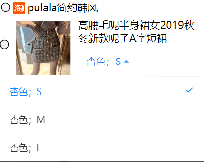
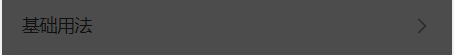

Duration :3:00
我们在使用小程序的时候基本的页面的一般都是很简洁的，所以会有一些菜单来做简单的诠释说明，或者是提供一些选项。这些菜单的弹出方式一般是向上和向下，那么如何来设置这些上下拉的菜单呢？
Duration :3:00
上下拉菜单在微信小程序中起提示、选项的功能，当你点击它时会弹出属于这个菜单的相应选项。我们要使用vant组件库，将dist文件提前下载好然后保存到项目中。我们在小程序中调用组件库，并在正确引用就可以实现了菜单功能了。
Duration :10:00
"usingComponents": {
"van-dropdown-menu": "/dist/dropdown-menu/index",
"van-dropdown-item": "/dist/dropdown-item/index",
}
}
option：设置菜单内容，
value：设置菜单内容的排列顺序
Page({
data: {
option1: [
{ text: '白色；S', value: 0 },
{ text: '白色；M', value: 1 },
{ text: '白色；L', value: 2 }
],
value1: 0,
},
});
Active-color设置选中状态颜色，
Value设置排列顺序，
Option菜单内容
<van-dropdown-menu active-color="#ee0a24">
<van-dropdown-item value="{{ value1 }}" options="{{ option1 }}" />
</van-dropdown-menu>

"usingComponents": {
"van-action-sheet": "/dist/action-sheet/index"
}
}
name：设置菜单选项，
subname： 设置副标题，
color：设置颜色
Page({
data: {
show: false,
actions: [
{
name: '选项'
},
{
name: '选项'
},
{
name: '选项',
subname: '副文本',
openType: 'share'
}
]
},
onClose() {
this.setData({ show: false });
},
onSelect(event) {
console.log(event.detail);
}
});
:设置上来菜单
bind:select="onSelect" ：选中选项时触发，禁用或加载状态下不会触发
bind:close="onClose" ：关闭时触发
<van-action-sheet
show="{{ show }}"
actions="{{ actions }}"
bind:close="onClose"
bind:select="onSelect"
/>

Duration :3:00
设置上下拉菜单可以使我们的小程序界面简洁，我们在设置菜单的时候要注意对菜单内容和排列顺序设置正确。菜单跟其他的组件有一点点不同菜单一般是在js里面进行配置，我们可以根据自己的需要在js中对菜单进行设置。菜单设置的标签有很多，需要我们理解运用。